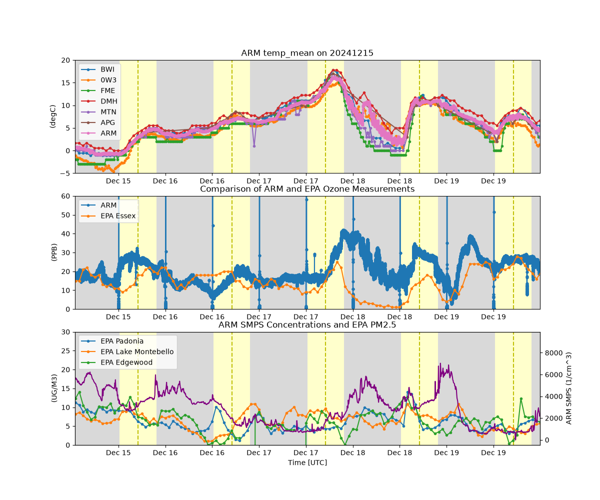

Note
Go to the end to download the full example code.
Consolidation of CoURAGE Data Sources#
This example shows how to use ACT to combine multiple datasets to support ARM’s CoURAGE deployment in Baltimore, MD. Example uses ARM, EPA, and ASOS data.

Downloading: 0W3
download_data(http://mesonet.agron.iastate.edu/cgi-bin/request/asos.py?data=all&tz=Etc/UTC&format=comma&latlon=yes&year1=2024&month1=12&day1=15&hour1=00&minute1=00&year2=2024&month2=12&day2=20&hour2=00&minute2=00&station=0W3) failed with HTTP Error 503: Service Unavailable
download_data(http://mesonet.agron.iastate.edu/cgi-bin/request/asos.py?data=all&tz=Etc/UTC&format=comma&latlon=yes&year1=2024&month1=12&day1=15&hour1=00&minute1=00&year2=2024&month2=12&day2=20&hour2=00&minute2=00&station=0W3) failed with HTTP Error 503: Service Unavailable
download_data(http://mesonet.agron.iastate.edu/cgi-bin/request/asos.py?data=all&tz=Etc/UTC&format=comma&latlon=yes&year1=2024&month1=12&day1=15&hour1=00&minute1=00&year2=2024&month2=12&day2=20&hour2=00&minute2=00&station=0W3) failed with HTTP Error 503: Service Unavailable
download_data(http://mesonet.agron.iastate.edu/cgi-bin/request/asos.py?data=all&tz=Etc/UTC&format=comma&latlon=yes&year1=2024&month1=12&day1=15&hour1=00&minute1=00&year2=2024&month2=12&day2=20&hour2=00&minute2=00&station=0W3) failed with HTTP Error 503: Service Unavailable
download_data(http://mesonet.agron.iastate.edu/cgi-bin/request/asos.py?data=all&tz=Etc/UTC&format=comma&latlon=yes&year1=2024&month1=12&day1=15&hour1=00&minute1=00&year2=2024&month2=12&day2=20&hour2=00&minute2=00&station=0W3) failed with HTTP Error 503: Service Unavailable
Downloading: APG
Downloading: BWI
Downloading: DMH
Downloading: FME
Downloading: MTN
[DOWNLOADING] crgmetM1.b1.20241215.000000.cdf
[DOWNLOADING] crgmetM1.b1.20241216.000000.cdf
[DOWNLOADING] crgmetM1.b1.20241217.000000.cdf
[DOWNLOADING] crgmetM1.b1.20241218.000000.cdf
[DOWNLOADING] crgmetM1.b1.20241219.000000.cdf
[DOWNLOADING] crgmetM1.b1.20241220.000000.cdf
If you use these data to prepare a publication, please cite:
Kyrouac, J., Shi, Y., & Tuftedal, M. Surface Meteorological Instrumentation
(MET), 2024-12-15 to 2024-12-20, ARM Mobile Facility (CRG), Baltimore, MD; AMF1
(main site for CoURAGE) (M1). Atmospheric Radiation Measurement (ARM) User
Facility. https://doi.org/10.5439/1786358
[DOWNLOADING] crgaoso3S2.a1.20241215.000000.nc
[DOWNLOADING] crgaoso3S2.a1.20241216.000000.nc
[DOWNLOADING] crgaoso3S2.a1.20241217.000000.nc
[DOWNLOADING] crgaoso3S2.a1.20241218.000000.nc
[DOWNLOADING] crgaoso3S2.a1.20241219.000000.nc
If you use these data to prepare a publication, please cite:
Trojanowski, R., Springston, S., & Koontz, A. Ozone Monitor (AOSO3), 2024-12-15
to 2024-12-20, ARM Mobile Facility (CRG), Baltimore, MD; Supplemental Facility 2
in rural setting (S2). Atmospheric Radiation Measurement (ARM) User Facility.
https://doi.org/10.5439/1287329
[DOWNLOADING] crgaossmpsS2.b1.20241215.000000.nc
[DOWNLOADING] crgaossmpsS2.b1.20241216.000000.nc
[DOWNLOADING] crgaossmpsS2.b1.20241217.000000.nc
[DOWNLOADING] crgaossmpsS2.b1.20241218.000000.nc
[DOWNLOADING] crgaossmpsS2.b1.20241219.000000.nc
[DOWNLOADING] crgaossmpsS2.b1.20241220.000000.nc
If you use these data to prepare a publication, please cite:
Kuang, C., Singh, A., Howie, J., Salwen, C., & Hayes, C. Scanning mobility
particle sizer (AOSSMPS), 2024-12-15 to 2024-12-20, ARM Mobile Facility (CRG),
Baltimore, MD; Supplemental Facility 2 in rural setting (S2). Atmospheric
Radiation Measurement (ARM) User Facility. https://doi.org/10.5439/1476898
import os
from datetime import datetime
import matplotlib.pyplot as plt
import numpy as np
import act
# Get Surface Meteorology data
lat = (39.04, 39.6)
lon = (-77.10, -76.04)
time_window = [datetime(2024, 12, 15), datetime(2024, 12, 20)]
asos_dict = act.discovery.get_asos_data(time_window, lat_range=lat, lon_range=lon, regions='MD')
asos_stations = asos_dict.keys()
# Set up a dictionary to fill with data
data_dict = {}
# Fill the dictionary with ASOS data
for s in asos_stations:
ds = asos_dict[s]
ds = ds.where(~np.isnan(ds.tmpf), drop=True)
ds['tmpf'].attrs['units'] = 'degF'
ds.utils.change_units(variables='tmpf', desired_unit='degC', verbose=True)
data_dict[s] = ds
# You need an account and token from https://docs.airnowapi.org/ first
# And then you can download EPA data
airnow_token = os.getenv('AIRNOW_API')
if airnow_token is not None and len(airnow_token) > 0:
latlon = '-76.905,39.185,-76.158,39.499'
ds_airnow = act.discovery.get_airnow_bounded_obs(
airnow_token, '2024-12-15T00', '2024-12-20T23', latlon, 'OZONE,PM25', data_type='B'
)
ds_airnow = act.utils.convert_2d_to_1d(ds_airnow, parse='sites')
sites = ds_airnow['sites'].values
data_dict['EPA'] = ds_airnow
airnow = True
# Place your username and token here
username = os.getenv('ARM_USERNAME')
token = os.getenv('ARM_PASSWORD')
# Download ARM data
if username is not None and token is not None and len(username) > 1:
# Example to show how easy it is to download ARM data if a username/token are set
sdate = '2024-12-15'
edate = '2024-12-20'
# Download and read ARM MET data
results = act.discovery.download_arm_data(username, token, 'crgmetM1.b1', sdate, edate)
ds_arm = act.io.arm.read_arm_netcdf(results)
data_dict['ARM'] = ds_arm
# Download and read ARM Ozone data
results = act.discovery.download_arm_data(username, token, 'crgaoso3S2.a1', sdate, edate)
ds_o3 = act.io.arm.read_arm_netcdf(results, cleanup_qc=True)
ds_o3.qcfilter.datafilter('o3', rm_assessments=['Suspect', 'Bad'], del_qc_var=False)
data_dict['ARM_O3'] = ds_o3
# Download and read ARM SMPS data
results = act.discovery.download_arm_data(username, token, 'crgaossmpsS2.b1', sdate, edate)
ds_smps = act.io.arm.read_arm_netcdf(results)
data_dict['ARM_SMPS'] = ds_smps
# Set up plot and plot all surface temperature data
display = act.plotting.TimeSeriesDisplay(data_dict, figsize=(12, 10), subplot_shape=(3,))
for k in data_dict.keys():
if 'ARM' not in k and k != 'EPA':
display.plot('tmpf', dsname=k, label=k, subplot_index=(0,))
elif k == 'ARM':
display.plot('temp_mean', dsname=k, label=k, subplot_index=(0,))
display.day_night_background(dsname='ARM', subplot_index=(0,))
display.set_yrng([-5, 20], subplot_index=(0,))
# Plot up ozone data
title = 'Comparison of ARM and EPA Ozone Measurements'
display.plot('o3', dsname='ARM_O3', label='ARM', subplot_index=(1,))
if airnow:
display.plot(
'OZONE_sites_2',
dsname='EPA',
label='EPA ' + sites[2],
subplot_index=(1,),
set_title=title,
)
display.set_yrng([0, 60], subplot_index=(1,))
display.day_night_background(dsname='ARM', subplot_index=(1,))
# Plot SMPS data
title = 'ARM SMPS Concentrations and EPA PM2.5'
if airnow:
display.plot('PM2.5_sites_0', dsname='EPA', label='EPA ' + sites[0], subplot_index=(2,))
display.plot('PM2.5_sites_1', dsname='EPA', label='EPA ' + sites[1], subplot_index=(2,))
display.plot(
'PM2.5_sites_3',
dsname='EPA',
label='EPA ' + sites[3],
subplot_index=(2,),
set_title=title,
)
display.set_yrng([0, 30], subplot_index=(2,))
plt.legend(loc=2)
ax2 = display.axes[2].twinx()
ax2.plot(ds_smps['time'], ds_smps['total_N_conc'], color='purple')
ax2.set_ylabel('ARM SMPS (' + ds_smps['total_N_conc'].attrs['units'] + ')')
display.day_night_background(dsname='ARM', subplot_index=(2,))
plt.show()
Total running time of the script: (1 minutes 9.080 seconds)